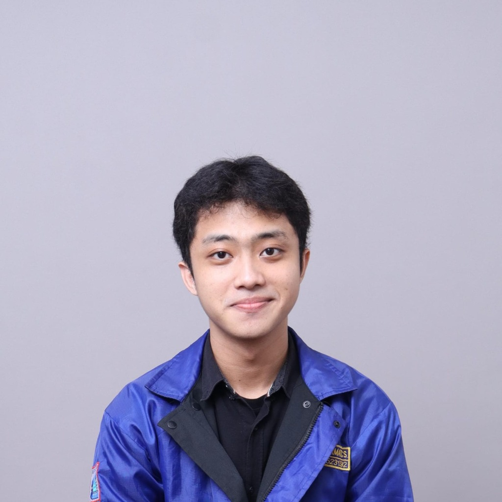

Undergraduate Informatics Engineering Student at ITS
I'm Aditya, an Informatics Engineering student at Institut Teknologi Sepuluh Nopember (ITS). I'm drawn to the intersection where technology meets real-world impact, translating technical concepts into solutions that genuinely help people and organizations.
What excites me most is the chance to work with diverse teams where each member brings something unique to the table. I've gained hands-on experience as a Business Analyst Intern, a Teaching Assistant, and a Frontend Web Engineer. These roles have taught me the importance of empathy, clear communication, and seeing problems from multiple perspectives.
I believe the best outcomes come from collaborative teamwork and a willingness to adapt. I'm always looking for opportunities to contribute, learn alongside others, and dive into new frameworks to expand my skill set.

DOT Indonesia
Collaborating with stakeholders to gather and document business requirements, ensuring technical solutions align with business objectives. Working closely with cross-functional teams to analyze workflows and support data-driven decision-making.
PM-BEM BERDAMPAK 2025 | Ministry of Education & Culture
Supported event coordination for a national-level education initiative under Indonesia's Ministry of Education and Culture, contributing to impactful programs that reached communities across East Java.
Institut Teknologi Sepuluh Nopember (ITS)
Had the privilege of supporting fellow students in understanding core software development methodologies. Facilitated lab sessions, reviewed assignments, and guided peers through practical exercises, learning just as much as I taught in the process.
Institut Teknologi Sepuluh Nopember (ITS)
Developed the frontend for MONA, an AI-powered financial management application. Focused on crafting an intuitive, user-friendly interface that makes complex financial data feel approachable and actionable.
ITS CAMP 2025
Presented a session on "Digital Ethics & Wise Communication in the Technology Era" to inspire and educate new students on responsible digital behavior and effective communication.
BEM ITS
Contributed to social impact programs under the Student Executive Board of ITS, including serving as Project Officer for SOCARE 2025 and Head of Consumption Division for ITS Mengajar for Indonesia 2025.
BEM FTEIC ITS
Led the event planning division, working with a dedicated team to conceptualize, organize, and deliver engaging events. This role taught me a great deal about delegation, creative problem-solving, and the value of empowering team members.
HMTC ITS
Actively contributed to student development programs, including mentoring for Nawasena and organizing HGTS (HMTC Goes to School) 2025, an outreach initiative introducing high school students to computer science.
Schematics ITS
Managed public communications and served as Master of Ceremonies for the Bootcamp & Seminar of Technology - Basic, connecting audiences with technology insights through engaging presentations.
BEM FTEIC ITS & PAMMITS
Supported event execution for ELITEXPESRAF 2024, Inclenation 2024, and PAMMITS, gaining valuable experience in logistics, coordination, and teamwork across multiple large-scale campus events.
Your Intelligent Personal Finance Companion
MONA is an intelligent personal finance companion designed to help users take complete control of their financial future. Built with modern technology and user-centric design, MONA makes managing money simple, secure, and insightful. Contributed as a Frontend Web Engineer, crafting the interface that brings complex financial data to life.
Comparative ML Recommendation Platform
A comparative web platform benchmarking four recommendation algorithms (KNN, SVD++, NCF, and CBF) in real-time using Lazada review datasets. Features personalized and contextual recommendations (e.g., "because you viewed this") alongside an AI-powered sentiment analysis module for automated customer review processing.
AWS Academy · Jan 2026
AWS Academy · Jan 2026
AWS Academy · Jan 2026
AWS Academy · Jan 2026
AWS Academy · Jan 2026
AWS Academy · Jan 2026
AWS Academy · Jan 2026
Palo Alto Networks · Jan 2026
Palo Alto Networks · Jan 2026
I'm always open to discussing new opportunities, collaborations, creative ideas, or peer learning. Feel free to reach out on any of the platforms or drop an email directly!
Open for Internship & Part-time roles